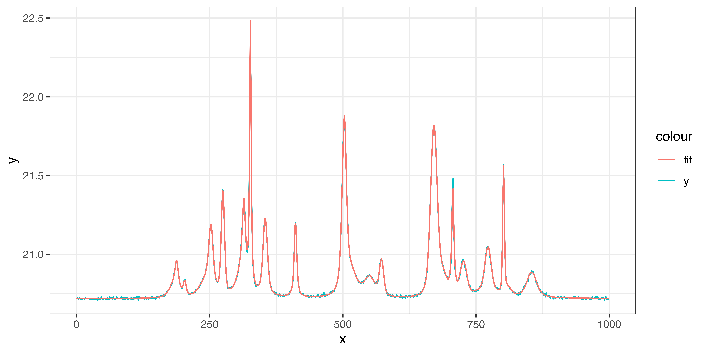

The R package spectralem uses a EM algorithm
The algorithm takes roughly a minute to fit 30 peaks.
General Usage
library(spectralem)
data <- synthetic.signal(seed = 1, K = 30, noise = 0.005)
x <- data$x
y <- data$y
res <- spectralem(x, y, K = 30, print_progress = FALSE) # no progress bar for vignettes
# get position of fitted peaks
res$fit_params$pos
#> [1] 670.9707 503.2656 300.2834 274.9292 801.6447 251.4052 706.4714 411.1247
#> [9] 770.3988 354.3531 187.4783 550.1228 326.5966 313.7704 854.5285 726.4122
#> [17] 772.4744 572.6367 688.3358 502.0227 516.6996 203.3263 809.3393 252.8646
#> [25] 238.9032 305.9471 549.7953 188.2852 180.1685 314.6850
fit <- voigt.model(x, res$fit_params)
# or alternatively fit <- res$fit
# plot the fit using a helper function defined in the appendix
plot_helper(x, y, fit)
Passing Optional Start Parameters
Can be done by passing the additional parameter start_peaks.
data <- synthetic.signal(1212, 4, 0.001)
res <- spectralem(
data$x, data$y,
K = 4,
start_peaks = list(
pos = c(465, 644, 828, 862),
gwidth = c(5, 5, 5, 5),
lwidth = c(0.1, 0.1, 0.1, 0.1)
),
print_progress = FALSE # no progress bar for vignettes
)
# plot the fit
plot_helper(data$x, data$y, res$fit)
Using BSplines as a Background Model
Using background_model any fixed background signal can be added. It is not advised to set linear = FALSE. The algorithm struggles with background modeling as visible in the following plot, and it should be removed prior to usage.
data <- synthetic.signal(seed = 312, K = 4, noise = 0.005)
x <- data$x
y <- data$y
# add spline background to data
library(splines2)
bsMat <- bSpline(x, df = 3)
f1 <- c(bsMat[, 1])
f2 <- c(bsMat[, 2])
f3 <- c(bsMat[, 3])
y <- y + 0.4 * f1 + 0.04 * f2 + 0.2 * f3
# fit
res <- spectralem(x, y, K = 4,
background_model = list(linear = TRUE, f1, f2, f3), print_progress = FALSE)
# voigt.model does not support non linear background; add them manually
alpha <- res$fit_params$background_amps
fit <- voigt.model(x, res$fit_params) + f1 * alpha[1] + f2 * alpha[2] + f3 * alpha[3]
# or alternatively fit <- res$fit
# plot the fit
plot_helper(x, y, res$fit)